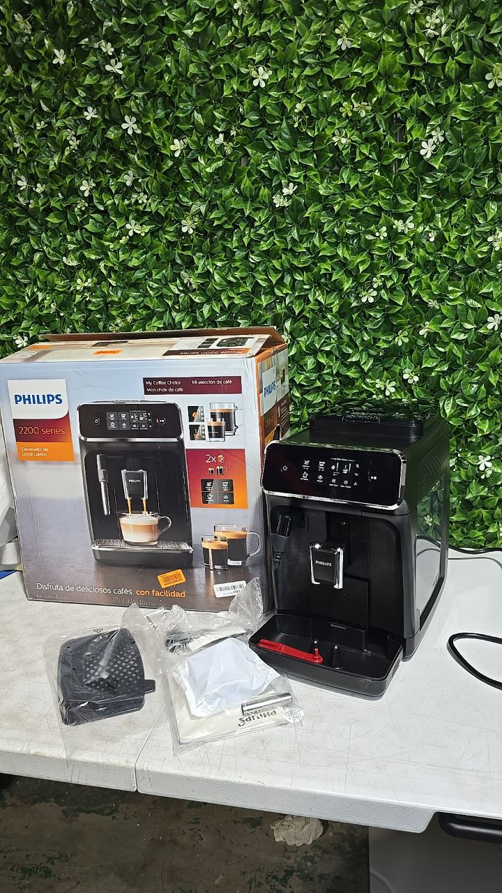

Some people want quick one-touch cappuccino. Others want classic black coffee, rich espresso, or more control over the brewing process. The best coffee machine depends less on hype and more on how you actually like to drink coffee every day.

Capsule and fully automatic machines are best for people who want speed, consistency, and less daily effort.
Espresso machines are ideal if you enjoy espresso, cappuccino, latte, and more control over taste and milk texture.
Drip coffee makers are often the better fit if you mainly drink larger cups of regular brewed coffee.
The first step is understanding the main categories. Drip coffee makers are designed for classic brewed coffee and larger cups. Espresso machines are built for espresso-based drinks like cappuccino and latte. Fully automatic or bean-to-cup machines aim to deliver café-style drinks with less manual work. Capsule machines focus on speed, convenience, and a simple routine.
If you mainly drink regular black coffee in mugs, a drip brewer often makes more sense than an espresso machine. If you love espresso-based drinks and milk drinks, an espresso or fully automatic model is usually the better fit.
If your favourite drinks are espresso, cappuccino, latte, flat white, or americano, you will usually get the most value from an espresso machine or a fully automatic machine.
If you mostly drink classic black coffee, especially in larger quantities, a drip coffee maker may be the smartest choice. If different people in the house like different drinks, a fully automatic machine is often the most flexible option because it can offer multiple drink styles from one machine.
If your top priority is easy daily use, capsule systems and one-touch automatic machines are often the most practical. If your top priority is control and café-style results, manual or semi-automatic espresso machines are usually more satisfying.
Breville is often chosen by people who want a more hands-on espresso experience at home, especially models with a built-in grinder and milk texturing. De’Longhi is strong in automatic and bean-to-cup machines, with many one-touch drink options across different price levels.
Philips is popular for super-automatic machines that focus on convenience and easy milk handling. JURA is usually seen as a premium fully automatic option for people who want high convenience and a more polished home coffee setup. Nespresso is often the easiest choice for people who want speed, simplicity, and less cleanup. Moccamaster is a strong option for people who mostly care about high-quality brewed coffee rather than espresso drinks.
The most important features depend on how you actually drink coffee. If you want milk drinks often, look at the milk system first. If you want stronger flavour control, built-in grinders, dose control, and temperature consistency matter more. If you want less maintenance, simpler systems usually win.
Other practical things to compare include drink variety, bean vs capsule format, cleaning effort, water tank size, footprint on the counter, and whether the machine is better for one person or multiple daily users.
If you want to shop for a coffee machine at a more affordable price, browse our current warehouse inventory below.
The best coffee machine is not always the most expensive one. The best choice is the one that matches your real coffee habits, the drinks you enjoy most, and how much effort you want to put into the process each day.
Some buyers want full control and espresso-style results. Others want one-touch simplicity. Some want a machine mainly for black coffee, while others want a flexible setup for the whole household.
Once you know what kind of coffee you actually enjoy most, choosing the right machine becomes much easier.